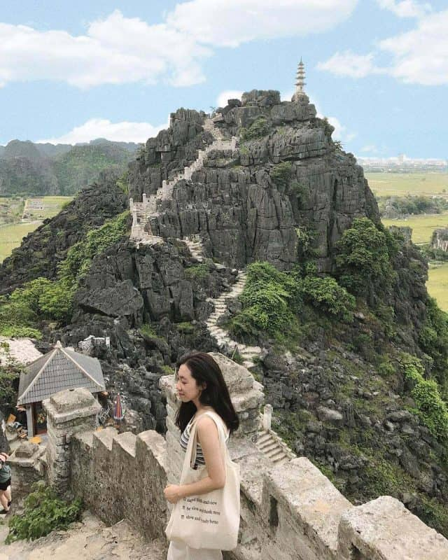

- TRAVRLBLOG
- Home
- Tour trong nước
- Tour ngoài nước
- Đặt vé
- Bảng giá tour
- Contact
- SIGN IN
Lạc Tiên Giới Đà Lạt - địa điểm sống ảo nghìn like
Khu du lịch Sơn Tiên bắt đầu mở cửa đón khách cách đây không lâu và được giới thiệu là trung tâm vui chơi, giải trí tầm cỡ châu Á
Review chi tiết Khu du lịch Sơn Tiên Đồng Nai
Bạn đang có dự định cho một chuyến tham quan Đà Lạt trong thời gian tới nhưng chưa chọn được cho mình những điểm đến lý tưởng?
Đến Phú Quý vào dịp lễ, một trải nghiệm không thể bỏ qua
Phú Quý là một quần đảo gồm 12 đảo lớn nhỏ, nằm cuối cùng của hệ thống đảo ở cực Nam Trung Bộ. Hiện nay đảo Phú Quý đang vào mùa đẹp nhất để đi

Đồi Ma Thiên Lãnh - Đỉnh Núi Cao Nhất Nam Du
Đồi Ma Thiên Lãnh là nơi mang vẻ đẹp đầy hoang sơ, huyền bí nổi tiếng tại Nam Du.

Cập nhật mới nhất giá vé các điểm du lịch ở Đà Nẵng
Đà Nẵng đang bước vào mùa đẹp nhất trong năm. Đây cũng chính là thời điểm lý tưởng để bạn ghé thăm mảnh đất này!